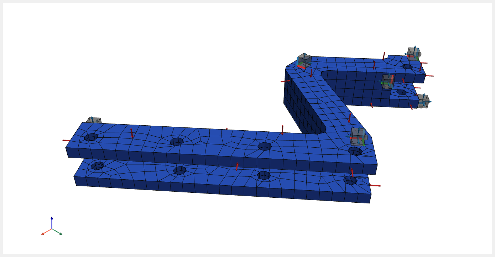
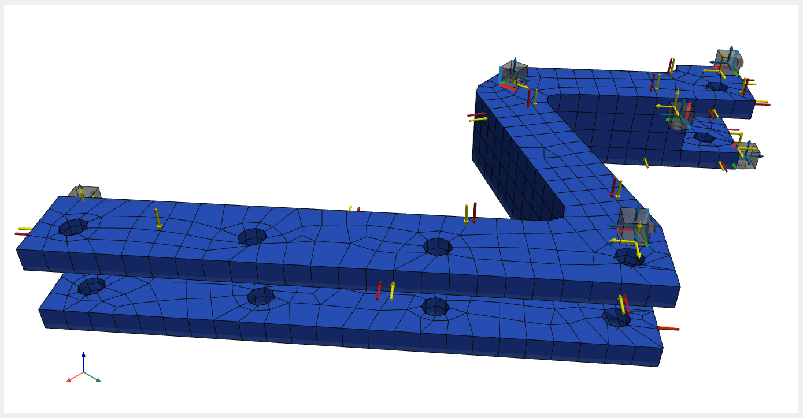
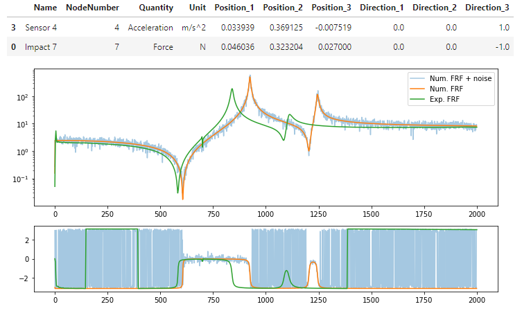

FRF synthetization¶
The mass and stiffness matrices contain information about the mass and stiffness distribution in the system. By solving the eigenvalue problem, the eigenfrequencies and eigenvectors of the system are determined.
Note
Example showing the basic use of the FRF synthetization: 03_FRF_synthetization.ipynb.
In the pyFBS library, modal analysis and FRFs synthetization [1], can be performed relying on mass and stiffness matrices imported from Ansys.
MK model initialization¶
First, we initialize the so-called MK model (with class pyFBS.MK_model) by importing .ress and .full files,
which contains information on the locations of finite element nodes, their DoFs, the connection between nodes,
the mass and stiffness matrix of the system…
import pyFBS
from pyFBS.utility import *
import numpy as np
import matplotlib.pyplot as plt
full_file = pyFBS.example_lab_testbench["FEM"]["B_full"]
ress_file = pyFBS.example_lab_testbench["FEM"]["B_rst"]
MK = pyFBS.MK_model(ress_file, full_file, no_modes = 100, allow_pickle = False, recalculate = False)
In this step, the eigenfrequencies and eigenvectors of the system are calculated. Their number is limited by the no_modes parameter.
Mode shape visualization¶
After the MK model is defined, its modal shapes can also be visualized. In the beginning is to display added the stl model, which won’t be deformed during the animation.
stl = pyFBS.example_lab_testbench["STL"]["B"]
view3D = pyFBS.view3D(show_origin= True)
view3D.add_stl(stl,name = "engine_mount",color = "#8FB1CC",opacity = .1)
Then the finite element mesh is added, on which the modal shapes will be animated.
view3D.plot.add_mesh(MK.mesh, scalars = np.ones(MK.mesh.points.shape[0]), cmap = "coolwarm", show_edges = True)
Mode shape is selected with method get_modeshape.
Parameters of animation are defined with the function dict_animation, which is imported from pyFBS.utility.
Here are set frames per second (fps), deformation amplification (r_scale), number of displayed frames (no_points).
select_mode = 6
_modeshape = MK.get_modeshape(select_mode)
mode_dict = dict_animation(_modeshape,"modeshape",pts = MK.pts, mesh = MK.mesh, fps=30, r_scale=10, no_points=60)
view3D.add_modeshape(mode_dict,run_animation = True)

Animation of 7th mode shape.¶
To show undeformed geometry we simply click the button in the popup window or we call method clear_modeshape():
view3D.clear_modeshape()
Visualization of impacts and responses¶
Locations and directions of impacts and responses must be collected in pandas.DataFrame.
# Path to .xslx file
xlsx = pyFBS.example_lab_testbench["meas"]["xlsx"]
# Import and show locations of accelereometers
df_acc = pd.read_excel(xlsx, sheet_name='Sensors_B')
view3D.show_acc(df_acc,overwrite = True)
# Import and show directions of accelereometers channels
df_chn = pd.read_excel(xlsx, sheet_name='Channels_B')
view3D.show_chn(df_chn)
# Import and show locations and directions of impacts
df_imp = pd.read_excel(xlsx, sheet_name='Impacts_B')
view3D.show_imp(df_imp,overwrite = True)
{kind=link}

Visualization of impacts and responses.¶
Defining DoFs of synthetized FRFs¶
FRFs can only be generated at nodes that are included in the numerical model. Therefore, it is necessary to find the nodes closest to the desired locations in the numerical model and update them. The orientation of the generated FRFs is independent of the direction in the numerical model and will not change with location updates.
Locations of impacts and responses are update using method update_locations_df:
df_chn_up = MK.update_locations_df(df_chn)
df_imp_up = MK.update_locations_df(df_imp)
Updated locations can also be shown on the finite element model.
view3D.show_chn(df_chn_up, color = "y", overwrite = False)
view3D.show_imp(df_imp_up, color = "y", overwrite = False)
{kind=link}

Visualization of updated locations of impacts and responses with yellow color.¶
FRF synthetization¶
FRFs are synthetized at given locations and directions in df_channel and df_impact parameters.
Even if we forget to define updated response and excitation locations, the function will automatically find
the nearest nodes in the numerical model from which the FRFs will be synthesized.
Frequency properited are defined in parameters f_start, f_end and f_resolution.
The number of modes that will be considered in the synthetization is defined in the no_modes parameter
and coeficient of constant modal dampling is defined in parameter modal_damping.
The result of the FRF synthetization can be in the form of accelerance, mobility or receptance,
which is defined in the frf_type parameter.
MK.FRF_synth(df_channel = df_chn, df_impact = df_imp,
f_start = 0, f_end = 2000, f_resolution = 1,
limit_modes = 50, modal_damping = 0.003,
frf_type = "accelerance")
The DoFs in the FRF matrix row follows the order of responses in the df_channel parameter,
and the DoFs column matches the order of excitations in df_impact.
Adding noise¶
To analyze various problems, numerically obtained FRFs are often contaminated with random noise,
which can be done by the add_noise method.
MK.add_noise(n1 = 2e-1, n2 = 2e-1, n3 = 5e-2 ,n4 = 5e-2)
FRF visualization¶
An experimental measurement is also imported to compare different FRFs.
exp_file = pyFBS.example_lab_testbench["meas"]["Y_B"]
freq, Y_B_exp = np.load(exp_file,allow_pickle = True)
When visualizing FRFs, responses and excitation locations can also be displayed in the form of an organized table.
plt.figure(figsize = (12,8))
s1 = 3
s2 = 0
param = ["Name" ,"NodeNumber", "Quantity", "Unit",
"Position_1", "Position_2", "Position_3",
"Direction_1", "Direction_2", "Direction_3"]
df_disp = df_chn.iloc[[s1]][param].copy()
display(df_disp.append(df_imp.iloc[[s2]][param]))
plt.subplot(211)
plt.semilogy(MK.freq,np.abs(MK.FRF_noise[:,s1,s2]), alpha=0.4, label = "Num. FRF + noise")
plt.semilogy(MK.freq,np.abs(MK.FRF[:,s1,s2]), label = "Num. FRF")
plt.semilogy(freq,np.abs(Y_B_exp[s1,s2]), label = "Exp. FRF")
plt.legend()
plt.subplot(413)
plt.plot(MK.freq,np.angle(MK.FRF_noise[:,s1,s2]), alpha=0.4)
plt.plot(MK.freq,np.angle(MK.FRF[:,s1,s2]))
plt.plot(freq,np.angle(Y_B_exp[s1,s2]))
{kind=link}

Comparison of different FRFs.¶
References
- 1
Nuno Manuel Mendes Maia and Júlio Martins Montalvao e Silva. Theoretical and experimental modal analysis. Research Studies Press, 1997.